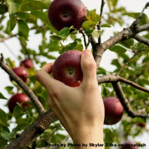

Things to do
The Farm has many activities for people to do.
Enjoy the local walks.
Pick your own produce from The Garden to take home with you!



Go on a Hayride (mid Jul to end Oct), Pick a Pumpkin (Oct), or find your way out of our 'Corn Maze' (mid-Jul to end Oct).


Children can visit the animals in our Petting Zoo and see how they live in their natural habitat.


Get active in the Play Park, on our tractor track! in The Barn, join in with our activities.
Have a go at 'milking' Daisy, or plant some seeds.
Look out for seasonal activities, in October you can carve a pumpkin.


Remember to bring your Wellington Boots!
| Opening times |
|---|
| Monday to Saturday: 8.00am to 5.00pm |
| Sunday: 9.00am to 4.30pm |
| Address |
|---|
| Nether Abbington Farm |
| Abington, Biggar ML12 6SD |
| Tel: 01864 502501 |
| email: info@abbingtonfarm.com |